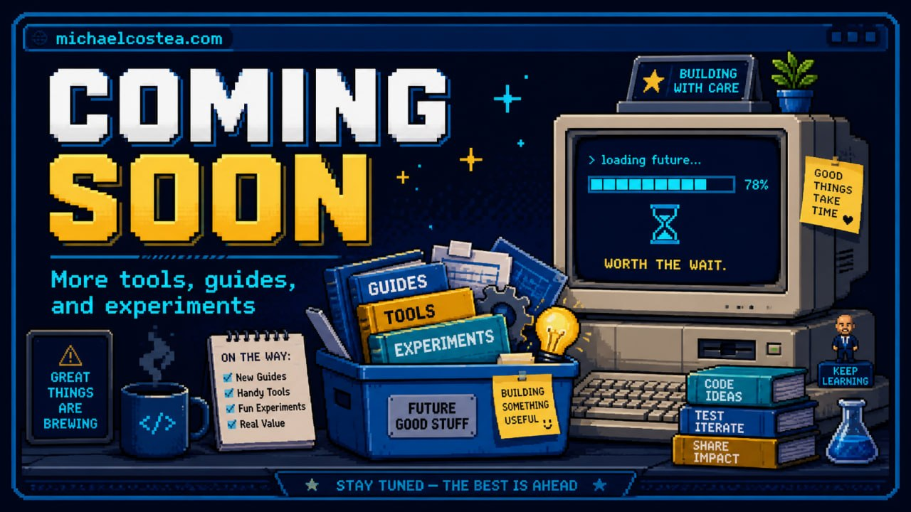
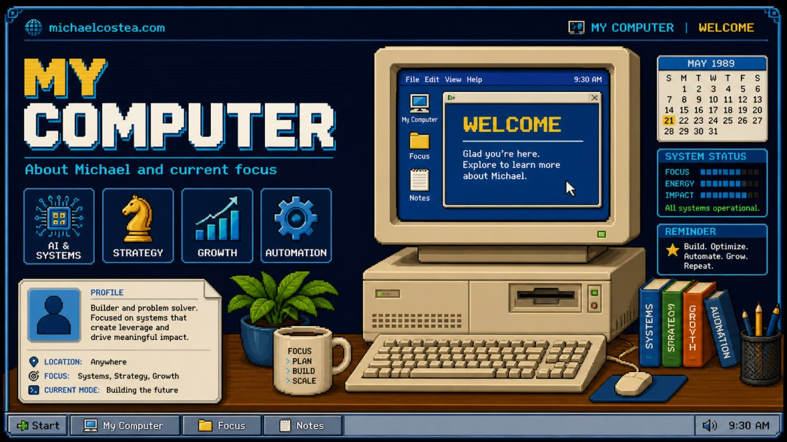
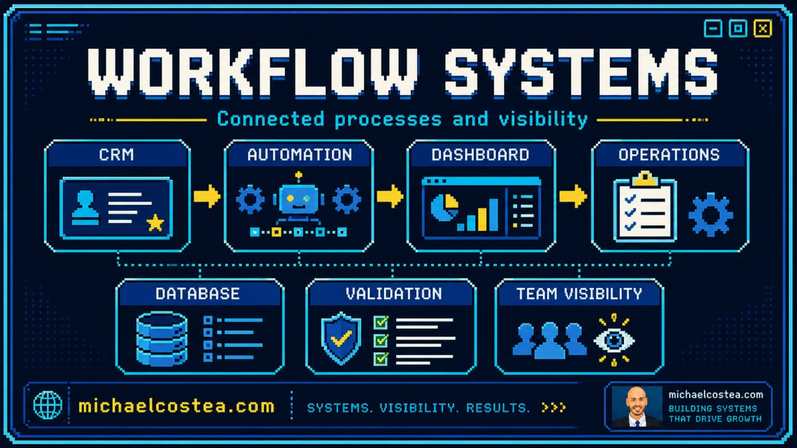
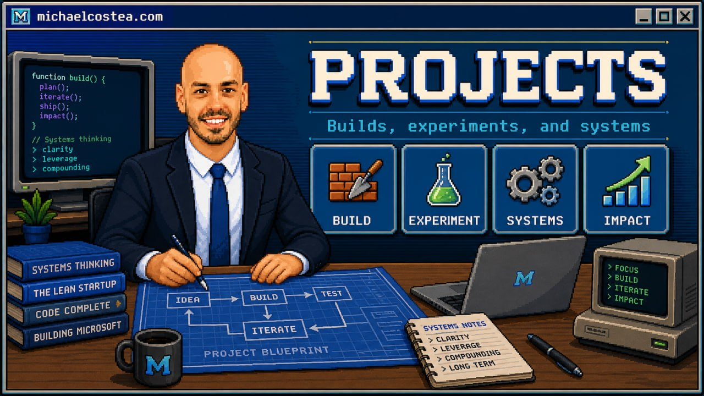
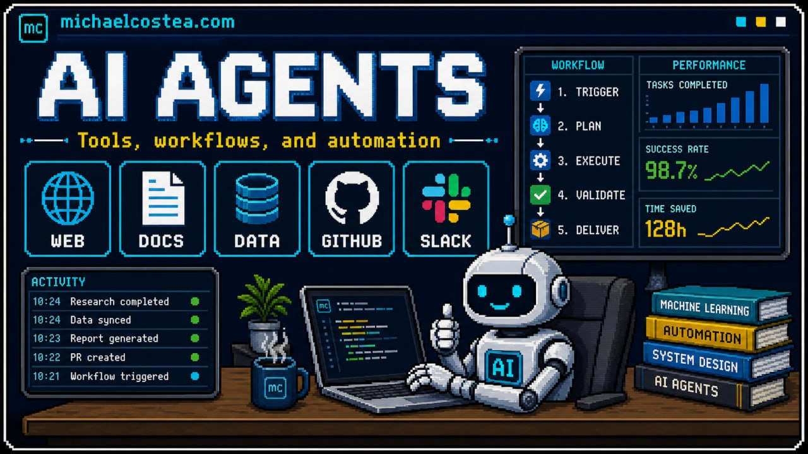
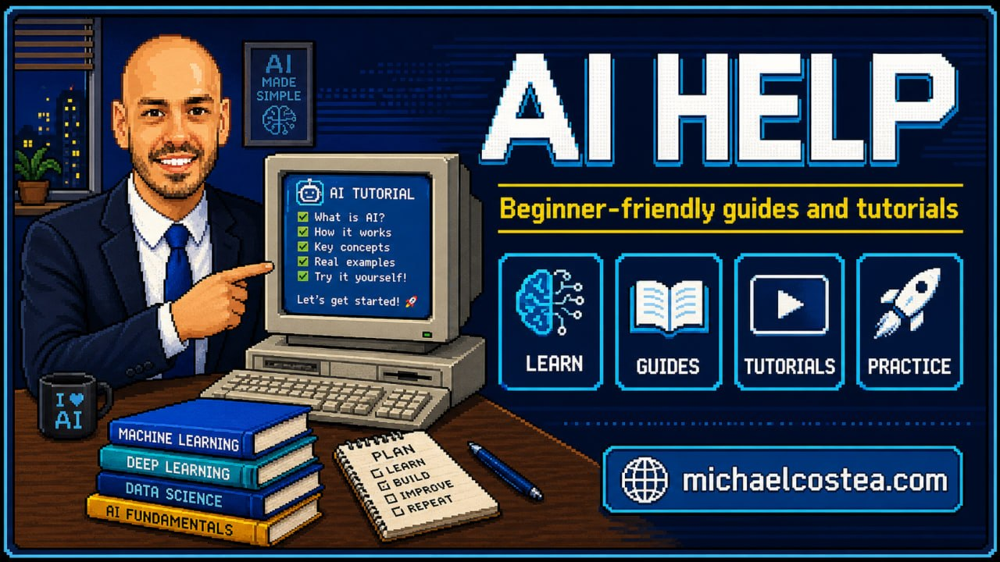
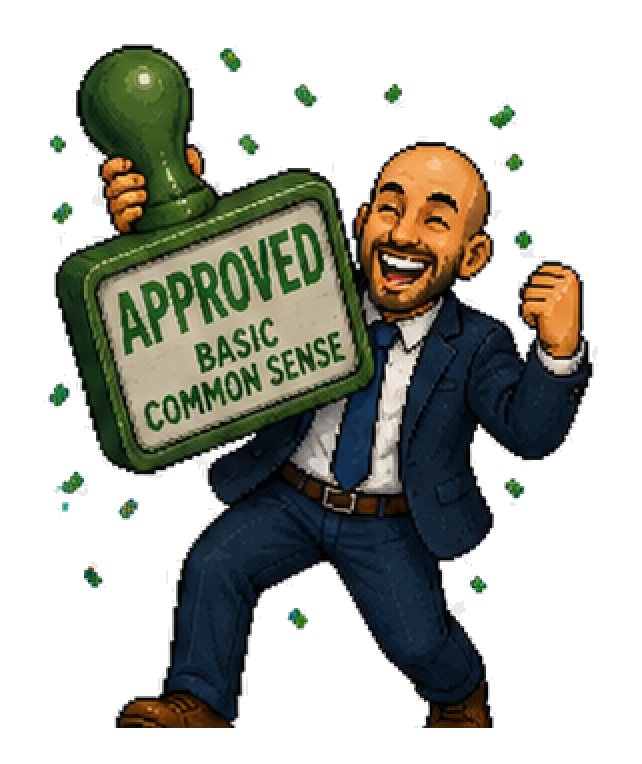
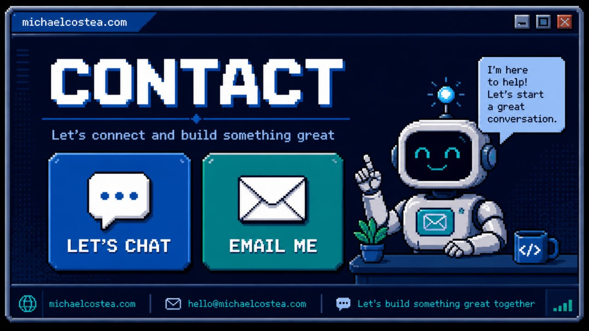

I build AI-powered business operating systems that turn messy workflows into visible, scalable, human-reviewed systems.Visible, reviewed AI systems.
I am Michael Costea, currently leading technology, automation, AI, digital infrastructure, and growth systems across a multi-brand electrical and energy services group.
My current mission is building a practical AI and workflow layer on top of core business systems so the company can grow faster, operate more efficiently, and deliver a better customer experience without unnecessary support-function headcount growth.
The goal is not AI for AI’s sake. It is a connected, visible business where sales, ops, finance, admin, and field teams work through clearer system architecture, review gates, and measurable operating loops.
Faster lead responseLess duplicate adminVisible handoffsHuman-reviewed automation
Lead response tighter first-touch and follow-up loopsAdmin reduction less duplicate entry and manual chasingException visibility earlier surfacing of stale work and risk
CURRENT ROLEHead of Tech, AI & Systems · All Electric Homes
Ready. System status: Scaling.AI: LIVEOPS: ONLINE
Programs

Applications hidden until release. Public webapps, games, demos, and internal tools are hidden until they are rebuilt to the MICHAEL OS 89 style guide and ready for public release.
My Computer - Current Operating Profile
Current Operating Profile

Name: Michael Costea
Current role: Head of Tech, AI & Systems — All Electric Homes
Location: Melbourne, Victoria, Australia
Direction: CTO-track systems and technology leadership across multi-brand electrical and energy services.
What I am building now
A scalable AI and workflow layer on top of core business systems. The layer is designed to connect marketing, lead generation, sales, customer journey, operations, finance, admin, internal tooling, and job completion into a clearer system architecture.
More business context visible across teams and systems.
Less duplicate entry, fragmented handoffs, and manual admin.
Faster lead response, quote preparation, and conversion flow.
More consistent customer experience from first touchpoint to job completion.
Automation that is reviewable, measurable, and safe by design.
Resume.doc - Michael Costea
Michael Costea
Head of Tech, AI & Systems · CTO-track Technology Leader · Business Systems & Automation Operator
Technology and operations leader currently owning the design and execution of technology, automation, AI, and growth systems across a multi-brand electrical and energy services group. My career has moved from electrical delivery, sales, operations, process improvement, and marketing into full ownership of systems, automation, digital infrastructure, and technical strategy.
I am building a scalable AI and workflow layer over core business systems so the company can grow faster, operate more efficiently, and deliver a better customer experience without unnecessary headcount growth in support functions. This is a CTO-track operating role: clear system boundaries, practical automation, measurable workflows, and human review where risk, quality, or customer trust matters.
Current Strategic Focus
Own and manage multi-brand websites, digital infrastructure, lead systems, and internal tooling.
Design and optimise lead generation, conversion flow, lead routing, and qualification systems.
Build and deploy AI-powered automation using agent workflows, including OpenClaw and related local systems.
Integrate marketing, sales, customer service, operations, finance, and admin workflows into a clearer architecture.
Oversee customer journey from first touchpoint to job completion.
Reduce manual admin workload and enable scalable growth without increasing operational overhead.
Experience
Head of Tech, AI & Systems — All Electric Homes
Feb 2026 - Present · Melbourne · On-site
Lead the design and execution of technology, automation, and growth systems across a multi-brand electrical and energy services group. Own digital infrastructure, websites, lead systems, AI-powered automation, customer journey systems, internal tooling, process automation, and technical strategy.
Impact: reduced manual admin workload, improved lead response speed and conversion flow, centralised systems across multiple brands, and enabled scalable growth without increasing operational overhead.
Business Development & Marketing Manager — Want A Heat Pump / Want A Sparky / All Electric Homes
Feb 2024 - Apr 2026 · Australia
Drove B2B and partner client relations, revenue generation, client acquisition and retention, digital strategies, website management, user-metric analysis, lead generation pathways, IVR overhaul, online review automation, chatbot integration, targeted email campaigns, partner programs, and community master class education.
Sales Manager — Want A Heat Pump
Nov 2023 - Apr 2026 · Melbourne
Worked with authorised retailers and delivered heat pump upgrades across residential and commercial sectors under the Victorian Energy Upgrade Program. Managed CRM-driven sales activity, conversion flow, customer relationships, and strategic marketing support.
Electrician — Want A Sparky
Apr 2023 - Jun 2024 · Mornington / South East Melbourne
Delivered domestic, commercial, and emergency electrical services across Want a Sparky, Want A Charger, Want a Heat Pump, and All Electric Homes. Supported the business transition toward electrification and greener energy services.
Electrician — Wired By MJD
Jun 2022 - Apr 2023 · Melbourne
Worked across smart home and integration electrical projects including custom builds, undergrounds, fault finding, renovations, high-end A/V and cinema installs, large rack builds, data, security, TV, KNX wiring, C-Bus diagnosis, custom lighting, and architectural builds exceeding $4M.
Electrician — Ezzy R Electrics
Feb 2018 - Jun 2022 · Melbourne
Built broad electrical trade experience across intercoms, telecommunications, A/V installation, fault finding, medical installations, renovations, custom installs, residential/commercial maintenance, network configuration, pool, garden and deck lighting.
Operations Manager / Owner — Bloom Coffee Bar
Jul 2017 - Feb 2018 · Carlton
Assisted in establishing and operating an owner/operator cafe, developing hands-on experience in people management, operations, customer experience, and small-business execution.
Optus — Sales Operations Support Manager / Process & Content Manager / Business Process Specialist / Retention Consultant
Aug 2010 - Jun 2017 · Melbourne
Managed retail support operations across 352 stores, maintained knowledge bases serving 5,000+ employees and 500,000 monthly visits, led process redesigns, support operations, credit policy improvements, training, communications, and large-scale change management.
Selected impact: 74% increase in work outputs over 12 months, removal/rewrite of hundreds of duplicate processes, support-ticket reduction, improved knowledge search accuracy, and redesigned operational reporting.
Core Capabilities — AI, Systems & CTO-Track Execution
AI Strategy & Roadmappingidentify high-leverage automation opportunities, prioritise by risk/ROI, define AI adoption roadmap, and translate business problems into practical technical systems.
Business Systems Architectureconnect marketing, sales, CRM, ops, finance, admin, field delivery, reporting, and customer journey into clear system boundaries with orchestration between them.
Digital Infrastructure Ownershipmulti-brand websites, domains, hosting, analytics, conversion pathways, landing pages, lead capture, webapp prototypes, and technical vendor/tool rationalisation.
Lead Gen & Conversion Systemslead routing, qualification, response-speed improvement, nurture/follow-up automation, review management, IVR/chatbot improvements, and conversion-flow optimisation.
Data, Reporting & Visibilityoperational dashboards, exception surfacing, KPI/report redesign, source-of-truth thinking, clean data capture, workflow measurement, and decision-support views.
Process Automation & Admin Reductionremove duplicate entry, simplify fragmented handoffs, automate routine admin, standardise operating procedures, and reduce support workload without hiding risk.
Integration MethodsAPI-first integration, browser automation as fallback, desktop/manual last resort, structured handoff design, audit trails, and measurable control points.
Customer Journey Systemsfirst-touch to job-completion visibility, escalation handling, customer communications, partner/client workflows, technician support, and consistent service experience.
Change & Knowledge Systemstraining packs, internal communications, knowledge-base design, process rollout, adoption support, stakeholder alignment, and team enablement.
Operations & Field Contextlicensed electrical background, heat-pump/electrification context, smart-home integration, customer-facing delivery, field constraints, and practical service-business execution.
Leadership & Commercial Judgmentbridge sales, operations, technology, marketing, partners, and leadership; balance automation with quality, customer trust, risk, approvals, and growth strategy.
What I Build - AI Business Operating Systems
What I Build

I build practical AI-powered operating layers for growing service businesses: lead flow, customer journey, operations, reporting, knowledge, and admin work made visible and reviewable.
Lead Response & Customer JourneyLead intake, qualification, quote prep, follow-up, review requests, warranty loops, and handoff summaries so fewer opportunities go stale.AI Agent WorkflowsOpenClaw/Hermes-style agents with bounded tools, Telegram accountability, logs, receipts, review gates, and fail-closed permission rules.Dashboards & Exception RadarOperational views that surface overdue jobs, stale leads, missing payments, review gaps, bottlenecks, and evidence links — not vanity charts.CRM / Ops / Admin IntegrationClear workflow boundaries between sales, marketing, admin, finance, field teams, reporting, and customer communications.Knowledge & Process SystemsSOPs, repeated-question capture, training packs, internal answers, source-of-truth cleanup, and process simplification before automation.Multi-Brand Digital InfrastructureWebsites, landing paths, lead capture, analytics, content systems, release gates, and technical vendor/tool rationalisation across brands.
Operating Principles
Clarity before automationAPIs firstHumans keep judgmentEvery workflow needs receiptsSmall proven loops first
How the first useful loop starts
1. Workflow mapPick one contained workflow before scaling: where the request starts, who owns each handoff, what data is trusted, and where the work currently stalls.2. Safe first loopBuild the smallest useful path with bounded tools, clear success criteria, and no customer, money, or quality impact without review.3. Evidence dashboardShow status, owner, source links, exceptions, and results. Human approval stays in the path until the loop earns trust.
Projects - AI Systems Portfolio
Project Portfolio

Positioning: this is a case-study style portfolio, not a random app list. Each bucket is framed around the business problem, the system being built, and the operating result it is designed to create.
Public demos remain hidden until release. The showcase explains the systems being built or led behind the scenes without exposing internal tools, customer data, or fragile prototypes. Scroll inside this window to see the case-study buckets.
Case-study lens: messy workflow → designed operating loop → visible owner/status/evidence → human review where trust, money, quality, or customers are involved.
Latest Build Notes — updated from project memory
UseAIForMe.com Early-Access Matching Marketplace
Current build: an early-access do-it-for-me AI marketplace where buyers post one real outcome, operators show proof and pricing, and paid work only starts after scope, fit, and approvals are confirmed. The live flow now covers free task posting, manual operator matching, verified operator profiles, fixed-scope packages with Stripe-backed checkout, and custom-job intake that stays human-reviewed instead of forcing blind auto-payment.
current build · AI operator marketplace · manual matching · approval-first checkout · Stripe
Remote Autonomy Reliability Pass
Cleaned up noisy health warnings in the agent operations layer: long Telegram reports now split safely, memory/task bridge calls accept the current automation format, and stale repeated error logs were archived instead of polluting live health checks.
agent ops · health checks · Telegram updates · observability
AI Help Guide 3: First Safe Workflow
Added a beginner-friendly tutorial for turning one private repeatable task into a safe AI workflow: write the goal, test with harmless data, add approval gates, save the playbook, and only then reuse it.
AI education · beginner workflow · human approval gates
Operational Backup & Memory Receipts
Continued the pattern of backup snapshots, memory notes, and verifiable receipts so builds can be reviewed later without relying on vague “it should be fine” status updates.
Strategic AI and workflow layer across sales, operations, finance, admin, reporting, customer experience, lead flow, and job completion. The goal is a more visible business where repeatable work is automated, exceptions surface early, and humans stay on judgment.
Maps core workflows and handoffs.
Defines automation boundaries, approval gates, and escalation rules.
Turns fragmented work into measurable operating loops.
AI strategy · business systems · operating leverage
2. Customer Journey & Revenue Automation
AI-assisted customer and lead workflows: fast response, qualification, quote preparation, follow-up, stale-lead detection, review loops, and handoff summaries for staff.
Lead intake → CRM context → next best action.
Quote/admin prep with missing-info flags.
Human approval before customer-impacting sends.
CRM · lead conversion · customer experience
3. Agent Infrastructure & Shared Context
Personal and business agent stack using OpenClaw, Hermes, Telegram, dashboards, scheduled jobs, watchdogs, memory, and shared context across phone, Windows control plane, and execution machines.
Visible task receipts instead of silent automation.
Shared memory/state so agents do not restart from zero.
Phone-first command path with reviewable outputs.
OpenClaw · Hermes · Telegram · memory · watchdogs
4. Data Visibility, Reporting & Exception Radar
Dashboard and reporting patterns that turn scattered operational data into clear action lists: overdue work, missing payments, stale leads, customer risks, review gaps, and process bottlenecks.
Exception-first reporting, not vanity dashboards.
Evidence links and audit trails for decisions.
Cleaner data capture at workflow source.
dashboards · KPI redesign · exception surfacing
5. Multi-Brand Digital Growth Systems
Digital infrastructure across Want A Sparky, Want A Heat Pump, All Electric Homes, and personal brand surfaces — websites, lead pathways, content systems, analytics, conversion flows, and safe public-release controls.
Brand-specific journeys with shared operating logic.
Lead capture and conversion path ownership.
Public demos gated until stable and aligned.
web platforms · lead gen · analytics · GitHub Pages
6. Knowledge Systems & Process Modernisation
Process and knowledge-system foundation from Optus-scale work through current AI enablement: SOPs, support flows, training packs, internal answers, duplicate-process removal, and change rollout.
Knowledge bases designed for staff adoption.
Repeated questions converted into reusable SOPs.
Process simplification before automation scale-up.
knowledge ops · SOPs · change management · scale
AI Agents - Business Operating Leverage
AI Agents & Workflow Automation

Ethos: build AI agents the way you would build a serious operating system for your life or business: visible, measured, permissioned, reviewable, and useful every day. The win is not replacing people with a chatbot. The win is removing repetitive drag, keeping context alive, catching exceptions early, and giving humans more leverage.
Most stock agent installs are impressive demos but weak operating layers. They can answer, code, and use tools, but they often lack durable memory, shared visibility, scheduled follow-up, Telegram accountability, watchdogs, dashboards, and a review loop. Our current stack is designed to close that gap.
HermesPlanning and execution layer: coding, repo edits, scheduled jobs, local APIs, research, verification, memory retrieval, and Telegram updates.
Master ControlVisibility layer: projects, live services, scheduled tasks, all sessions, memory, Obsidian notes, and agent engagement from one cockpit.
Human Review LayerTrust layer: approval gates, evidence, audit trails, fail-closed workflows, exception surfacing, and handoff back to a person.
Current daily setup: phone → Windows PC control plane → local agents + shared operating context → Work Mac Mini execution environment. Click the diagram to open it full-size.
Concerns and pitfalls to respect
Silent failure: agents can look busy while missing the real business outcome. Track inputs, outputs, receipts, and verification.
Tool overreach: never let an agent delete, spend, message customers, or change systems without explicit permission and rollback paths.
Context rot: long chats drift. Use memory deliberately, compact sessions, and keep source-of-truth docs clean.
Model cost and rate limits: long tool loops burn tokens. Monitor usage and pick the cheapest model that can reason well enough for the job.
Trust gap: if a human cannot see what happened, why it happened, and what changed, the workflow is not production-ready.
Why this can become a cheat code
When agents are tracked and monitored properly, they become a compounding leverage system: they remember decisions, chase loose ends, prepare work, run checks, produce evidence, and keep pushing while you sleep or focus elsewhere. That is the real cheat code — not one magic prompt, but a monitored agent stack that keeps life and business workflows moving.
Build principles
Start with one painful repeatable workflow, not a vague “automate everything” goal.
Give the agent bounded tools, test data, and a clear success definition.
Make every workflow observable: logs, Telegram updates, dashboard state, and final receipts.
Keep humans on judgment, customer trust, finance, safety, legal, quality, and edge cases.
Scale only after the workflow proves it saves time without creating hidden risk.
AI Help - Start Here
AI Help: Everyday Starter Guides

This is the starting point for normal people who want a safe, simple first agent. No hype. No jargon wall. Learn what agents do, then follow the install path for Hermes or OpenClaw.
Start simple: pick one guide, test in private, and keep humans approving anything risky.
Learn what agents do
→
Try copy/paste tutorials
→
Install one agent
→
Use safely
Plain English version: an AI agent is a helper that can use tools. It can read, write, search, run commands, and remember context — but it still needs clear instructions and human review.
IntroToAI.ppt - Website Preview
Intro to AI: slide preview
Preview the public AI Help starter deck inside the website. Use the arrows to move through the slides, or download the PDF for easy sharing.
Business" loading="lazy" />📊 BusinessSurface exceptions, reduce duplicate entry, help with reporting.
Real workflow examples
Email → CRM → Welcome → Follow-upRead a new enquiry email, extract name/contact/service/suburb, check for duplicates, enter the lead into a CRM, send an approved welcome email, schedule follow-ups until the customer replies, then hand the conversation to a human with a clean summary.Quote prep assistantRead job notes, photos, customer requirements, and pricing rules; prepare a draft quote pack; flag missing information; notify Telegram for approval; only send after human sign-off.Operations exception radarCheck dashboards and inboxes each morning, find stale leads, overdue jobs, missing payments, or review risks, then post a ranked action list with links and evidence.Knowledge-base maintainerWatch repeated staff questions, draft SOP updates, link source documents, ask for approval, and publish a cleaner internal answer so the next person does not ask again.Customer journey coordinatorTrack first touch, booking, quote, job completion, invoice, review request, and warranty follow-up so nothing falls between sales, admin, and field teams.Personal life adminSummarise bills, renewals, travel plans, reminders, emails, and documents into one Telegram briefing with tasks and due dates.
The power is the chain: read context → update systems → communicate → schedule next action → monitor for reply → escalate to a human when judgment or trust matters.
What it should not do without you
Spend money, delete files, send public messages, or change business systems without approval.
Make legal, medical, financial, safety, or employment decisions on its own.
Replace human judgment where customer trust, risk, quality, or approvals matter.
First proven prompt to try
I am new to AI agents. Explain what you can do in 5 bullet points, then ask me one simple question so we can try a safe first task.
Guide 3 - Your first safe AI workflow
Your First Safe AI Workflow
A beginner tutorial for turning one annoying repeat task into a reusable AI playbook.
Goal: do one useful workflow in about 30 minutes without giving the AI dangerous access. You will pick a low-risk task, give it examples, check the answer, then save the final prompt so you can reuse it.
Step 1 — choose a boring, safe task
Good first tasksSummarise meeting notes, rewrite an email draft, turn messy notes into a checklist, compare options, or make a simple SOP.Avoid on day oneCustomer databases, payments, deleting files, public posting, medical/legal/financial decisions, or anything that can hurt trust if wrong.Use fake or copied dataPaste a small sample into the chat. Remove passwords, private customer details, and anything you would not put in a training document.Define successWrite one sentence: “I want a clean checklist I can follow tomorrow” or “I want a polite email draft I can edit before sending.”
Step 2 — use this starter prompt
You are helping me build one safe repeatable workflow.
Task: [describe the boring task]
Input: [paste notes, transcript, email draft, or requirements]
Output format: [checklist / email draft / table / SOP]
Rules:
- Ask questions only if something critical is missing.
- Do not invent facts.
- Mark uncertain items as [check].
- Do not send, delete, buy, publish, or change systems.
- Give me a short final review checklist.
Step 3 — review like an operator, not a spectator
Accuracy passCheck names, dates, numbers, promises, and any claim the AI may have guessed.Tone passMake it sound like you. Remove corporate sludge, hype, over-promising, or fake confidence.Risk passAnything involving money, customers, safety, privacy, or reputation needs a human approval step before action.Evidence passAsk: “What source line supports each important point?” If it cannot point back to the input, mark it as [check].
Step 4 — turn the good version into a reusable playbook
Once the result is useful, save the prompt plus the expected output format. That is your first workflow, not just one lucky chat.
Workflow name: [Example: Weekly meeting notes to action list]
When to use it: [Every Friday after team meeting]
Inputs needed: [Transcript, decisions, open questions]
Output wanted: [Owner / task / due date / risk / next action]
Human approval required before: [sending to team, updating CRM, promising dates]
Final prompt: [paste the cleaned prompt here]
Step 5 — add the smallest automation later
Manual firstRun it by copy/paste 3 times. Fix the prompt each time. Manual repetition exposes the weird edge cases.Then semi-automaticLet an agent read one safe folder or draft one message, but keep approval before it changes anything.Approval gate

The magic words are: “draft only, wait for my approval.” Keep that rule until the workflow is boring and proven.Evidence ruleFor every completed run, keep the input, output, review notes, and what changed. No evidence, no trust.
First workflow ideas
Inbox triage: paste 10 emails → get urgency, owner, next action, and draft replies.
Quote prep: paste job notes → get missing info, risks, and a customer-friendly summary.
Meeting cleanup: paste transcript → get decisions, tasks, blockers, and follow-up message.
Research brief: paste links/notes → get pros, cons, unknowns, and recommendation.
Rule of thumb: if you would trust a careful junior assistant to draft it but still want to review before sending, it is a good first AI workflow.
Guide 5 - How to hire AI help safely
How to Hire AI Help Safely
A practical buyer guide for when you want results done for you, not another chatbot tab to babysit.
Short version: good AI help still needs a human operator, a clear brief, visible scope, approval rules, and proof. If someone promises “fully autonomous magic” before they understand the job, slow down.
When done-for-you AI makes sense
Good fitYou have one annoying repeat task, a small workflow, a website change, inbox/admin cleanup, research pack, CRM tidy-up, or a prototype that needs building.Still keep a humanCustomer messages, pricing, operations, files, and payments should stay reviewable by a real person even if AI does most of the draft work.Bad first buy“Automate my whole business” with no owner, no source data, no workflow map, and no approval rule. That is how vague AI projects eat time and money.Best first winPick one narrow outcome: better lead response, faster quote prep, a cleaned-up website section, or a weekly admin/reporting loop.
What a solid AI service should show you
Clear scopeWhat is being delivered, what is not included, what inputs are needed from you, and what “done” means.Real operatorThe work may use AI tools, but a named human should still own the output, communication, fixes, and review loop.Proof and examplesAsk for previous work, screenshots, sample outputs, or a visible process. “Trust me bro” is not a portfolio.Safe payment logicFixed packages can go to checkout fast. Messier custom jobs should confirm scope, fit, and price before money moves.
Questions to ask before you pay
Ask this
Why it matters
What exactly will I receive?
Stops vague deliverables and “strategy” fluff.
What do you need from me to start?
Shows whether the operator knows the real dependencies.
Which parts are AI-generated vs human-reviewed?
Helps you judge risk, quality, and how much checking you still need to do.
What happens if the first version misses?
Clarifies revision flow instead of surprise conflict later.
Will this touch customer data, payments, or live systems?
If yes, the workflow needs explicit approvals and safer rollout steps.
Red flags
No one can explain the workflow in plain English.
The seller jumps straight to “full automation” without asking about your current process.
They want broad account access before agreeing scope.
They cannot show sample outputs, checkpoints, or a revision plan.
They promise zero mistakes, zero review, or “set and forget” on risky tasks.
Simple buyer brief template
Task:
I need help with [one workflow or deliverable].
Outcome I want:
[what success looks like in plain English]
Inputs I can provide:
[notes, screenshots, links, files, examples]
What must not happen:
- no public posting
- no customer sends
- no deleting data
- no spending money
Approval rule:
Draft first. Wait for my review before anything goes live.
UseAIForMe-style rule of thumb: fixed packages can be priced fast, but custom AI work is healthier when the platform confirms scope, operator fit, and review gates before charging like it is a commodity.
Guide 6 - Chatbot or operator?
Chatbot or Operator?
Use a chatbot when you need ideas or drafts. Use an operator when you need an actual outcome finished.
Simple rule: if the task touches tools, files, formatting, handoffs, website edits, research cleanup, or review loops, you usually want a human operator using AI, not just a chatbot tab.
Fast decision table
If you need...
Best first move
Why
Ideas, wording, rough planning, or a first draft
Use a chatbot
Fast, cheap, and good for low-risk thinking work.
A landing page, web app, workflow, spreadsheet cleanup, or finished deliverable
Use an operator
Someone still has to check quality, connect tools, and own the output.
A messy task but you do not know who should do it
Use a matching marketplace
You need help scoping, fitting the operator, and keeping payment gated until the job is clear.
Anything touching customers, payments, or private systems
Use human-reviewed delivery
Trust, safety, and approval checkpoints matter more than speed.
What a done-for-you AI operator actually does
Translates the messy askTakes your vague goal and turns it into scope, deliverables, and a sensible first step.Uses the right toolsPrompts, code, websites, spreadsheets, docs, automation tools, or design tools instead of pretending one chat box does everything.Checks the outputFixes formatting, tests logic, catches obvious breakage, and shows proof before calling it done.Keeps risky work gatedScope, pricing, approvals, and access stay visible before anything live or expensive happens.
Good tasks for a marketplace like UseAIForMe
Website cleanupLanding pages, copy refreshes, mobile fixes, new sections, and lightweight web builds.Admin + inbox cleanupSpreadsheet tidy-ups, summaries, recurring reports, and repeatable office work.CRM or workflow setupLead tracking, follow-up loops, dashboards, SOPs, and operating docs.Agent or automation buildsScoped AI helpers, research loops, content systems, and practical internal tools.
Bad expectations to avoid
“AI will run my whole business with no human involved.”
“Custom work should be one-click checkout before scope is reviewed.”
“I can paste passwords or API keys into a public job card.”
“If the tool sounds smart, the finished output must be right.”
Best way to brief the work
Task:
I need this outcome finished:
Success looks like:
Useful links / examples:
Budget range:
Deadline:
Rules:
- no public posting
- no spending money
- no customer sends
- no secrets in chat
- draft / scope first
Why this matters: the gap between “AI can answer” and “AI can deliver” is where most people lose time. A marketplace flow works best when it protects scope, shows operator proof, and keeps money gated until both sides agree on the real job.
Guide 7 - Practical AI tutorials
Practical AI Tutorials That Actually Help
Five real beginner workflows with a useful input, a better prompt, a quality bar, and the next automation step.
How to use this page: do not just paste a magic prompt and hope. Pick one workflow, use the sample structure, run it on harmless data, then judge the output against the quality bar. If it passes three times, turn it into a repeatable agent task later.
Tutorial 1 — turn messy notes into an action plan
Use when: you have meeting notes, voice-dump notes, job notes, or a messy brain dump and need a usable plan.
Act as an operations assistant.
Turn the notes below into an action plan I can use today.
Output exactly this structure:
1. One-sentence summary
2. Decisions already made
3. Action table: task | owner | due date | dependency | risk
4. Missing information I must confirm
5. Two-minute message I can send to the team
Rules:
- Do not invent owners, dates, prices, or promises.
- If the notes do not say something, write [check].
- Put urgent/customer-impacting items first.
Notes:
[paste notes]
Quality bar: a busy person should know what to do next without reading the original notes.
Tutorial 2 — build a customer-safe email from rough context
Use when: you need a reply that is clear, honest, and not full of AI fluff.
Write a customer-safe email draft from this context.
Context:
[paste situation, customer question, facts, constraints]
Output:
- Subject line
- Email draft
- Internal notes: what I should verify before sending
Style:
- Plain English, Australian tone, no corporate waffle.
- Be helpful but do not overpromise.
- If we need to check something, say we will confirm it instead of pretending.
- Do not mention AI.
Quality bar: you should only need light editing, not a full rewrite. Check names, dates, prices, and promises before sending.
Tutorial 3 — make a decision brief, not a vague comparison
Use when: you are comparing tools, suppliers, software, quotes, workflows, or strategy options.
Create a decision brief from the options below.
Decision to make:
[what are we choosing?]
Options:
[paste options, notes, links, prices, concerns]
Output exactly:
1. Recommendation in one sentence
2. Comparison table: option | cost/effort | upside | downside | hidden risk | best fit
3. What I would choose if speed matters
4. What I would choose if quality/risk matters
5. Questions to answer before committing
Rules:
- Separate facts from assumptions.
- Mark anything not proven as [check].
- Do not choose the fanciest option by default.
Quality bar: the answer should help someone make a decision, not just describe the options.
Tutorial 4 — turn one repeat task into an SOP
Use when: a task keeps living in someone’s head and needs to become teachable.
Turn this repeat task into a simple SOP.
Task:
[paste what happens now]
Output:
- Purpose: why this task exists
- Trigger: when to do it
- Inputs needed
- Step-by-step process
- Quality check before calling it done
- Common mistakes
- Escalate to a human when...
- Simple checklist version
Rules:
- Write for a new person on their first week.
- Keep steps concrete.
- Do not add software/tools unless I named them.
Quality bar: someone else could follow it without asking you five basic questions.
Tutorial 5 — create a weekly exception report
Use when: you need a manager/operator view of what needs attention, not a vanity summary.
Create a weekly exception report from this raw update.
Raw update:
[paste notes, numbers, job list, CRM export, inbox notes]
Output:
1. Executive summary: 5 bullets max
2. Red flags: what needs action now
3. Stale items: leads/jobs/tasks waiting too long
4. Numbers that changed
5. Decisions needed from me
6. Next actions ranked by impact
7. Follow-up message drafts if useful
Rules:
- Surface bad news clearly.
- Rank by customer impact, revenue impact, and operational risk.
- Mark uncertain numbers as [check].
Quality bar: the report should make the next action obvious within 30 seconds.
Turn a good tutorial into an agent workflow
Run it manually 3 timesIf the prompt only works once, it is not a workflow yet. Fix the input format and output format until it is repeatable.Add a safe sourceLet an agent read one folder, one pasted note, or one exported CSV. Do not give it your whole business system first.Add an approval gateThe agent can draft, rank, summarise, and prepare. A human approves sending, spending, deleting, publishing, or customer-impacting changes.Keep evidenceSave input, output, what changed, and what was approved. Evidence is what turns AI from a toy into an operating layer.
Guide 2 - Install your first AI agent
Install Your First AI Agent
A simplified beginner install path: choose one agent, one computer, one private test.
Simple install rule: install the app, connect one model login, test locally, then add Telegram. Do not connect real business systems on day one. If a step fails, stop there — do not stack random fixes.
Hermes: easiest first choiceBest when you want a friendly agent that can chat, edit files, run checks, use skills, remember context, and report back through Telegram.OpenClaw: choose when you want a bigger local control planeBest when you want a broader cockpit for agents, plugins, dashboards, gateways, workspaces, and local automation.Beginner token ruleUse GPT / ChatGPT OAuth if the wizard offers it. Avoid juggling API keys until the simple path works.Safety ruleUse a harmless test folder first. No customer data, money, deleting, public posting, or live business tools.
What success looks like
The command works in your Terminal.
You can run hermes --version or openclaw --version.
You connect one model login.
You get one local hello reply.
Your private Telegram bot replies to one safe test.
Doctor/status checks look healthy.
What you are about to install
1. Agent appHermes or OpenClaw is the local program on your computer. It coordinates tools, memory, messages, and model calls.2. Model loginThe model is the AI brain. OAuth means browser login. API keys are secret passwords. Keep both private.3. Telegram gatewayThe gateway is the bridge between your private Telegram bot and the local agent running on your computer.4. Dashboard/Web UIThe dashboard is the cockpit. It is useful after install/config checks pass, but it is not the first setup step.
Step 0 — choose one path
Important: this is the only choice section. After this, follow the visible selected panel from top to bottom.
1. Choose the agent
2. Choose your computer
Showing now: Hermes Agent on Mac. Only this computer path is visible below.
Step 1 — before touching Terminal: get these ready
ChatGPT / provider loginHave your account ready. Choose GPT / ChatGPT OAuth in the wizard if offered.Telegram on phoneInstall Telegram and log in. Your phone is the easiest place to create/test the bot.BotFather tokenUse verified @BotFather, send /newbot, choose a display name, then choose a username ending in bot. Copy the token privately.Telegram user IDMessage @userinfobot or @get_id_bot and copy your numeric ID. This lets you allow only yourself.Safe test folderCreate a folder called AI Agent Test. Put one harmless file inside called test-note.txt.Permission ruleDay one: no customer data, money, deleting files, public messages, business systems, or full Desktop/Documents access.
In plain English: you are preparing the account, the private message channel, and a harmless sandbox before any installer touches your computer.
Step 2 — selected install path
Follow only the selected panel below. Each panel is a complete install + initial setup path. The dashboard/Web UI appears at the end on purpose.
Hermes simple flow
Install → hermes setup → hermes model → local hello → hermes gateway setup → hermes gateway run → hermes doctor.
OpenClaw simple flow
Install → setup wizard → model/workspace/channel config → foreground gateway test → doctor/status. Dashboard and background service come last.
Hermes Agent on Mac — complete beginner path
1. Open Terminal
Press Command + Space, type Terminal, press Enter.
In plain English: Terminal is where you paste setup commands.
2. Check Git
git --version
If Mac asks to install command-line tools, allow it, then run the command again.
Success: you see a Hermes version instead of command not found.
4. Run first setup
hermes setup
Choose a local/default workspace. When model/provider is offered, choose GPT / ChatGPT OAuth if available.
5. Confirm or change model
hermes model
In plain English: the model is the brain. OAuth is easier because you log in through a browser instead of copying secret API keys.
6. Run one local chat before Telegram
hermes chat -q "Say hello in one sentence."
# If your version opens interactive chat instead:
hermes
Do not continue until you get a local reply.
7. Connect Telegram gateway
hermes gateway setup
hermes gateway run
Paste your BotFather token and numeric Telegram user ID only into the local setup prompt. Keep this Terminal open for the first test. Stop with Ctrl + C.
8. Verify, then dashboard last
hermes doctor
hermes status
hermes dashboard --host 127.0.0.1 --port 9119 --no-open
Open the shown local dashboard URL only after doctor/status look healthy.
Hermes Agent on Windows — WSL Ubuntu path
In plain English: WSL installs Ubuntu, which is Linux inside Windows. Hermes-style tools are usually more reliable there than plain Windows PowerShell.
1. Install Ubuntu from PowerShell
Start → type PowerShell → right-click → Run as administrator → Yes.
wsl --install -d Ubuntu
Restart if Windows asks.
2. Open Ubuntu and update it
Open the Ubuntu app from Start. Linux passwords show no dots while typing; that is normal.
Choose a display name, for example Mike Test Agent.
Choose a username ending in bot, for example mike_test_agent_bot.
Copy the token into a private password note. The token is a password.
Open your new bot and press Start or send /start.
Get your numeric ID from @userinfobot or @get_id_bot. Never send those helper bots your token.
When Hermes/OpenClaw asks for allowed users, paste only your numeric Telegram ID.
If you accidentally share your token: emergency rotation
Open BotFather.
Select your bot.
Revoke/regenerate the token.
Update Hermes/OpenClaw gateway config.
Restart the gateway.
Step 4 — first safe tests
Test 1: can it reply?
Say hello in one sentence.
Test 2: can it explain itself?
Explain what you can do safely. Do not use tools yet.
Test 3: can it respect a folder boundary?
Look only inside my AI Agent Test folder. Tell me what files you see. Do not edit anything.
Permission message to reuse
Before using tools, show me a short plan. Do not delete files, send messages, spend money, or touch business/customer/private data.
Step 5 — troubleshooting by symptom
What you see
Probably means
Try this
command not found
Terminal cannot find the app yet.
Close/reopen Terminal, run exec $SHELL -l, then check version.
permission denied
The command lacks permission or wrong folder.
Stop. Do not randomly add sudo. Re-read that step.
Model says no auth
Provider login/API key not connected.
Re-run hermes model or openclaw configure --section model.
Telegram bot silent
Gateway off, token wrong, bot not started, or user ID not allowed.
Send /start, check token/user ID, then run gateway foreground again.
Dashboard blank or useless
Dashboard opened before setup/gateway/doctor was healthy.
Go back to doctor/status checks. Dashboard is last.
Windows path feels broken
PowerShell route hit Windows-specific issues.
Use the WSL Ubuntu route in the selected panel.
OpenClaw complains about Node
Manual runtime mismatch.
Use official installer, or update to Node 24 / at least Node 22.14+ before npm fallback.
Step 6 — how to stop safely
Foreground gateway: press Ctrl + C in the Terminal running it.
If Telegram feels wrong: stop gateway, remove bot from groups, rotate token in BotFather.
If unsure: stop. Do not connect customer data, payment tools, or public posting.
Step 7 — maintenance and dashboard reminder
Monthly health checkRun update/doctor/status, send one safe prompt, and check provider usage/cost.
hermes update
hermes doctor
# or
openclaw update
openclaw doctor
Dashboard/Web UI ruleOpen it only after install, model login, Telegram gateway, and doctor/status are healthy. Keep it local while learning: 127.0.0.1, not public internet.
Contact

Send me the messy workflow.
I am most useful where a business has scattered systems, repeated admin, slow handoffs, unclear reporting, or AI ideas that need safe review gates before they touch customers, money, or operations.